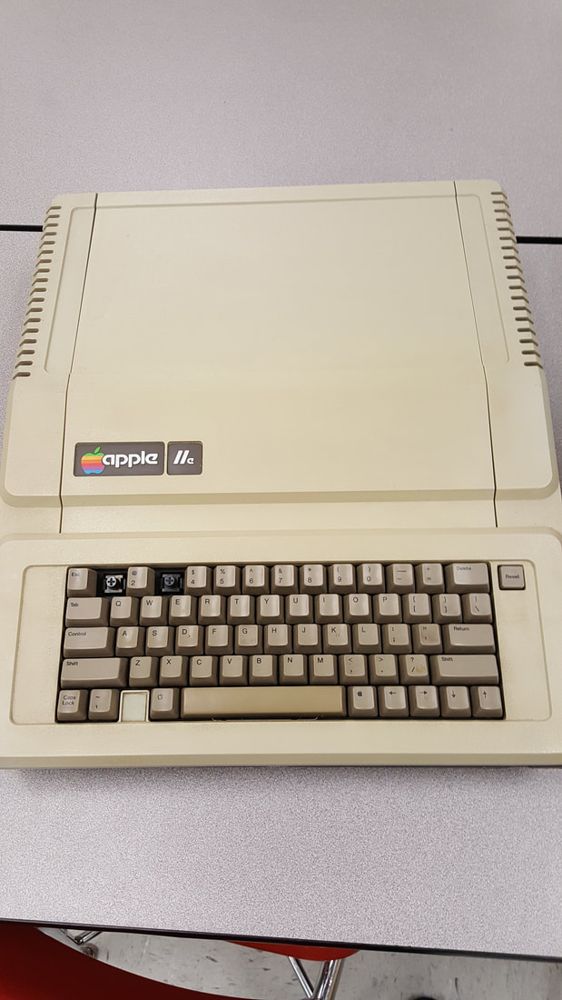
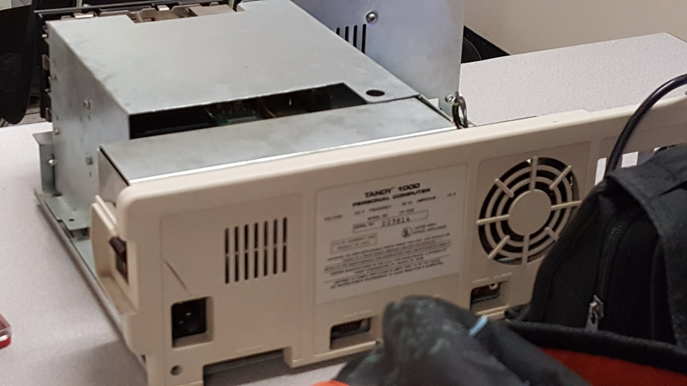
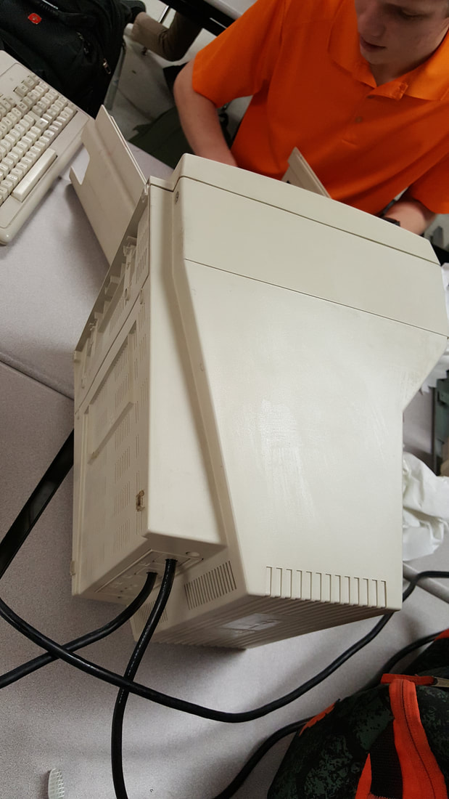
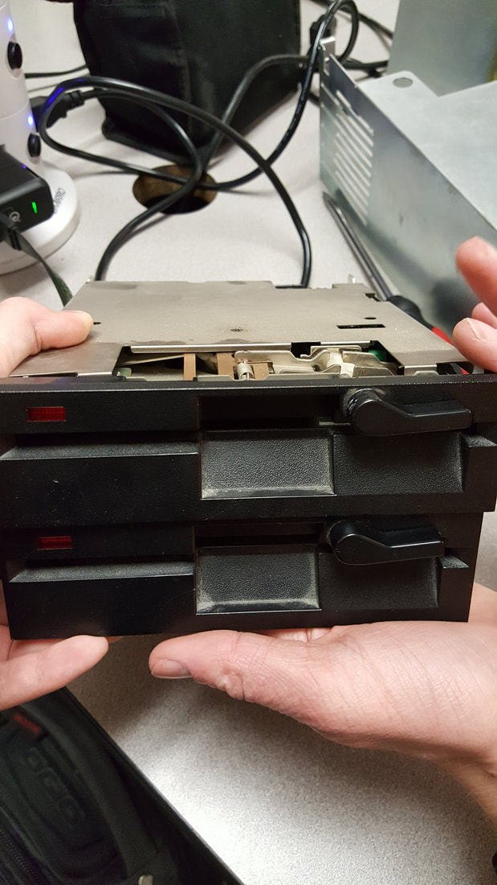
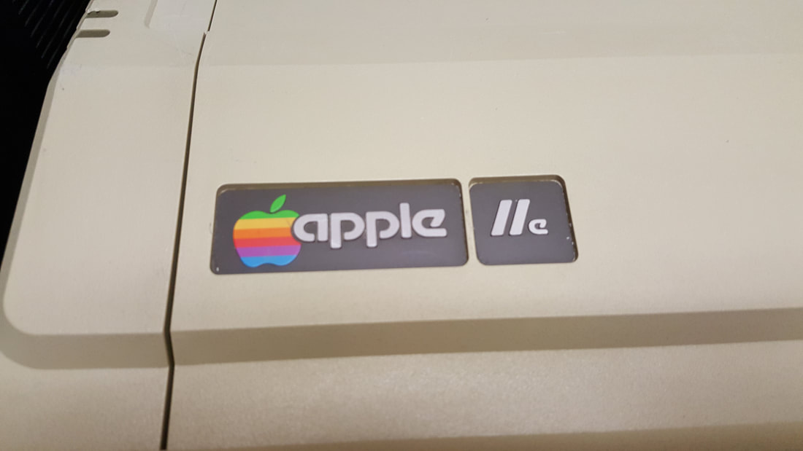

The first week of Maker Faire was the planning stage. Individuals and groups submitted applications in hope their project would be approved. For Maker Faire, my partner and I planned on restoring several old computers and making demo disks for a hands on demonstration as our presentation. The computers we plan on restoring are an Apple //e, Tandy 1400 LT, Xerox 820 II, and hopefully a Tandy 1000. The restoration process for these computers will consist of first dusting them off, cleaning dirt and grime, cleaning floppy heads, and doing what is required to get the computer to operate correctly. The presentation component, which will be at the Maker Faire, will consist of the computers set up with demo disks and note cards listing the history and operation of the computers. I have already brought in the Apple //e with its two Disk ][ drives and a composite CRT. The Apple //e operates flawlessly except for the missing ‘1’ and ‘3’ keys. The Apple displays and boots into basic. The cassette interface also works with us being able to load a game through it. It is unknown whether the Disk ][ drives work. The Tandy 1400 LT is in working order and in fine condition. We are going to do mostly software oriented things with the Tandy 1400 since it is in wonderful condition. The Tandy 1000 needs a ton of work. It is more yellow than a lemon and is covered in dirt and grime. It also does not work as far as we are concerned. Another thing to note is that the Tandy 1000 has a color CRT which will be a challenge to restore. The Xerox 820 II has minimal external and internal cleaning to do. The biggest problem is that it has bad RAM that is soldered on the motherboard. All computers need to be dusted off, except the Tandy 1400.
|  |
The second week of Maker Faire consisted of use starting work on the Apple //e. My partner and I first removed and took apart all components from the Apple. We used an air compressor set between twenty and thirty psi to remove the ancient dust that would not come off from the keyboard and motherboard with a can of air. We cleaned off the dirt and grime from the Apple using a toothbrush and windex like cleaner combination. There is still a bit more dirt on the Apple, but the dirt is stuck on it good. We would need to use a strong alcohol based solution for the stuck dirt but we do not have time to do so. We may also not have enough time to clean the keyboard. One big problem with retro computers is how to get software to and from the computer. The most common solution is to use images (an exact copy of a storage medium to every one and zero) of a storage medium, like a floppy, and put it on the real storage medium using a modern computer. The Apple II line has three (maybe four if you count ramdisks) storage mediums: hard drives, cassettes, and floppy disks. Physical hard disks for the Apple II are pretty rare and expensive. That leaves the built in cassette in/out ports and the floppy disk drives that are connected via a card. A program called ADTPro makes clever use of the Apple II’s audio port. ADTPro allows for a disk image to be sent over the Apple II’s audio port and be written to a diskette. For this to work there needs to be at least one disk drive connected to the Apple and the modern computer has a speaker and microphone port just like the Apple II for communication. The software contains a client that runs on a modern computer and the server that runs on the Apple II. ADTPro on the Apple II would request a disk image after formatting a diskette over its cassette out port to the microphone on the modern computer. The modern computer running the client would look for the disk image in a directory. If it is found, then the client would send pieces of the floppy image one at a time over its speaker to the Apple II’s cassette in port. The pieces received by the Apple II would be written one at a time to the diskette in the disk drive. We created three floppies so far using ADTPro: an ADTPro boot diskette, Apple DOS 3.3 boot diskette, and a diagnostic diskette. Everything worked flawlessly. Next week we will be working on the Tandy 1000. We will be cleaning it up and getting the disk drives to work since they are the currently only known problem.
For Maker Faire week three, we worked on the Tandy 1000. The Tandy 1000 was a very difficult computer to take apart and assemble back together. I am pretty sure the designers of this computer had zero intent of making this computer serviceable. We cleaned the inside from dust and cleaned the outside of dirt and grime. The problem of the Tandy 1000 was that its disk drives would not work, meaning that no operating system or anything software wise could be loaded or done. The Tandy 1000 works fine every other way as far as we can test it. The Tandy 1000 posts and the disk drive turns on, but does not do anything else. Both disk drives exhibited the same behavior, light turns on, the computer asks for a diskette, diskette is inserted and nothing else happens. Through some forum posts and our thoughts, we figured that the most likely culprit is the floppy controller we ordered another one but it will not be here by next week. There is not much to progress on the Tandy 1000 at this point.
We worked on the Apple //e due to not being able to progress forward at the current moment. We made some more disks from disk images using ADTPro. We got a graphical environment working and a word processor. What is left is to get a game or two and CP/M onto some floppies.
|  |  | ||||||
|  |
We are in our final week of Maker Faire. Unfortunately, my partner has been sick and unable to participate but for Friday. I was able to successfully put Dig Dug on a floppy. I was Trying to put Tetris II on the other side of the floppy, but it unfortunately does not work for some reason. The disk image did work in an emulator so I figured it is a problem with the disk itself. The Tandy 1400 LT is ready to go with several demo disks, a GUI with a mouse, and a few games. The Tandy 1400 currently has two demo disks, a GUI in the form of GEM desktop, games, and utilities. Unfortunately, there is not enough time to fit in the Xerox 820 II into Maker Faire. This is due to shipping time and the time I have to work on it at home. The Apple //e is almost ready to go with just a few more disk images to be written that include a game or two and a Apple ][ tutorial disk. We replaced the Tandy 1000’s floppy controller, but that unfortunately did not work. I took the disk drives home to perform some diagnostics on them and both of them were bad. The Tandy 1000 would not be ready to present by the time of Maker Faire. In conclusion, we have the Tandy 1400 LT with several demo disks and a GUI ready to go, the Apple //e ready to go with some games and a simple textual GUI. The Tandy 1000 will not be able to run any software or demo disks but will still make an appearance at the maker faire.
|  | |||||||
The actual Maker Faire occured this week. We presented the Apple //e, Tandy 1400 LT, and Tandy 1000. The most attractive and visited of these computers was the Apple //e due to the color screen and well known classic games. The Tandy 1400 LT did not receive as much attention as I expected. This was probably due to its unlit monochrome screen being unattractive. Games we had were Tetris, Pac-Man, and Galaxian. Pac-Man was the most popular due to its recognizability, color, and simple controls. We were using an online game server containing audio for games to load games onto the Apple //e we did not had time to put onto floppies. At our “booth” we had signs that told the specs and a brief history of the Tandy 1400 LT, Apple //e, and Tandy 1000. The Tandy 1000 was running nothing because it was not in working order. The Tandy 1400 LT was running a demo and the GEM desktop environment. The Apple //e, as already stated, was running multiple games. We had many people come to our both and compliment us on the computers and work we had done.
|
||